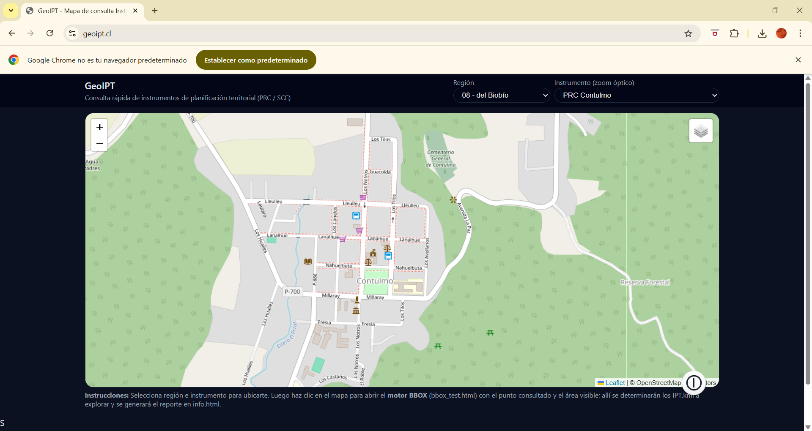

Guía rápida GeoIPT
1 / 3

🔍 Zoom urbano
Acércate hasta ver claramente el área urbana.
💡 Tip: Haz clic dentro del área urbana para consultar la zona normativa y descargar el KML.

💡 Tip: Haz clic dentro del área urbana para consultar la zona normativa y descargar el KML.